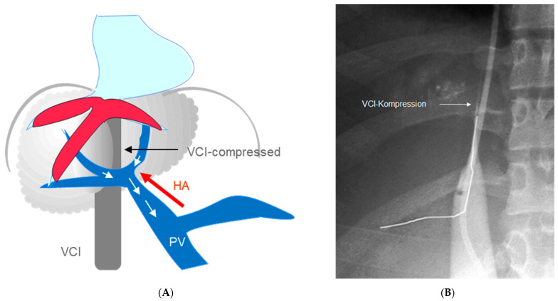
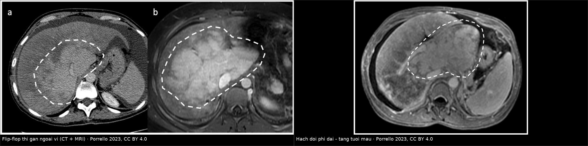
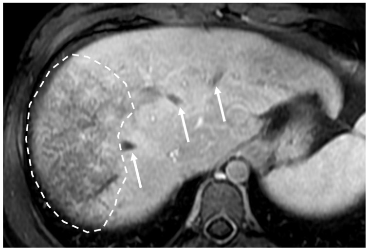
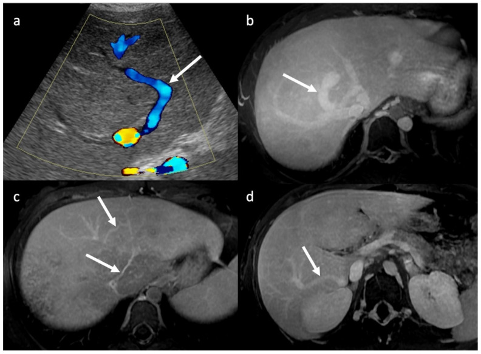
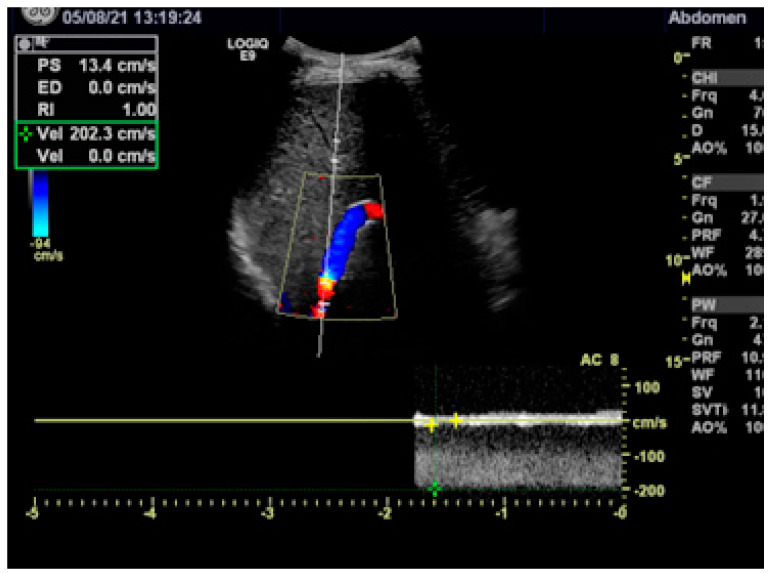

1901 — Hội chứng Budd–Chiari: "flip-flop", mạng nhện tĩnh mạch & khi nào nong bóng/TIPS / Budd–Chiari syndrome
Tags: pattern:flip-flop pattern:gan-ung-huyet pattern:huyet-khoi pattern:shunt-trong-gan vung:gan vung:tm-gan vung:tm-chu-duoi score:Rotterdam score:Clichy score:BCS-PI-TIPS protocol:CT-3-thi protocol:MRI-gan protocol:Doppler
Mức chắc chắn (certainty): tổng hợp y văn (literature synthesis) — số liệu lấy từ hai bài tổng quan open-access có ảnh gốc: Porrello et al., Diagnostics 2023 (PMC10341099, CC BY 4.0) và Rössle, Diagnostics 2023 (PMC10137827, CC BY 4.0), cùng bài tổng quan quản lý (Mancuso et al., Diagnostics 2022, PMC9689902, CC BY 4.0). Bài không có ca nguyên văn riêng của nhóm.
Câu hỏi gốc của bài: bệnh nhân trẻ, bụng to, cổ trướng, đau hạ sườn phải; siêu âm không thấy tĩnh mạch gan phải; CT thì cửa thấy gan ngoại vi tối, gan trung tâm và hạch đuôi sáng — "flip-flop". Vậy: cơ chế nào tạo ra hình ảnh đó? tắc ở đâu? khi nào chỉ cần kháng đông, khi nào nong bóng, khi nào TIPS, khi nào ghép gan? và điều gì trên phim quyết định thứ tự can thiệp? Điểm tựa: Budd–Chiari là bệnh của dòng ra (outflow), không phải bệnh của nhu mô. Vì vậy hạch đuôi được tha (có nhánh tĩnh mạch ngắn đổ trực tiếp vào TM chủ dưới) → phì đại và tăng tưới máu; phần gan còn lại ứ huyết → giảm tưới máu ngoại vi. Điều trị là giải phóng dòng ra theo bậc, và hình ảnh mạch máu — không phải men gan — chọn bậc đó.
1. Tổng quan — vì sao "flip-flop" và vì sao hạch đuôi to ra
A. Bệnh học (pathology) và cơ chế:
- Định nghĩa: hẹp/tắc dòng ra tĩnh mạch gan từ tiểu tĩnh mạch gan đến chỗ đổ vào tĩnh mạch chủ dưới (IVC) – nhĩ phải. Ít nhất một tĩnh mạch gan bị tắc; IVC có thể bị chèn hoặc huyết khối kèm theo.
- Nguyên phát (primary): trạng thái tăng đông (bệnh tăng sinh tủy, yếu tố V Leiden, thiếu protein C/S, hội chứng kháng phospholipid…) → huyết khối. Một thể đặc biệt là màng/xơ dạng vách (membranous web) ở IVC, gặp nhiều hơn ở châu Á, có thể liên quan yếu tố di truyền.
- Thứ phát (secondary): < 1% — u hoặc nang chèn ép/xâm lấn tĩnh mạch gan, IVC. Đây là lý do luôn phải tìm khối u trước khi gọi "nguyên phát".
- Mức độ nặng phụ thuộc số tĩnh mạch gan bị tắc: tắc một nhánh thường không triệu chứng hoặc rất nhẹ; tắc cả ba nhánh → tăng áp lực xoang gan, ứ huyết, cổ trướng, suy gan.
- Vì sao hạch đuôi (caudate lobe) được tha: hạch đuôi có các tĩnh mạch ngắn đổ trực tiếp vào IVC, không đi qua ba tĩnh mạch gan chính. Khi ba tĩnh mạch gan tắc, xoang gan của hạch đuôi không bị ứ → nhu mô không teo, còn phì đại bù và tăng tưới máu động mạch. Phì đại hạch đuôi gặp ở khoảng 50% bệnh nhân, và có thể chèn ép IVC gây hẹp dòng chảy TM chủ dưới.
- Cơ chế "flip-flop" (zonal enhancement): tắc dòng ra → áp lực xoang gan tăng → tưới máu cửa giảm ở ngoại vi (phần gan bị ứ huyết), trong khi động mạch gan tăng bù ở trung tâm và hạch đuôi. Trên CT/MRI thì cửa: ngoại vi giảm ngấm, trung tâm tăng ngấm — đảo ngược kiểu tưới máu bình thường ("flip-flop").

(A) Sơ đồ BCS hoàn toàn: tĩnh mạch cửa trở thành đường dẫn lưu; hạch đuôi phì đại chèn hẹp tĩnh mạch chủ dưới. (B) Cavogram: tắc IVC do gan to (mũi tên "VCI-Kompression"). Đây là lý do phải chụp/đo IVC trước khi chọn đường can thiệp. Nguồn: Rössle, Diagnostics 2023, PMC10137827 Fig. 1, CC BY 4.0.- Vì sao mạn tính thành "mosaic": ứ huyết kéo dài → xơ hóa, xoang gan giãn không đều, hồi lưu tĩnh mạch trong gan → mạng lưới ngấm thuốc dạng lưới (reticular/mosaic). Kèm theo: teo các phân thùy bị ứ, phì đại phần được tha, nốt tái tạo lành tính và nguy cơ HCC (tăng dần khi sống lâu, đặc biệt thể màng IVC).
B. Ngưỡng định lượng bắt buộc (cửa 1 Argon):
| Đại lượng | Con số đã kiểm chứng | Ý nghĩa thực hành |
|---|---|---|
| Tần suất phì đại hạch đuôi | ~50% bệnh nhân BCS (PMC10341099) | Không đặc hiệu (cũng gặp ở xơ gan) nhưng là mảnh ghép quan trọng của "flip-flop" |
| Đường kính tĩnh mạch hạch đuôi | > 3 mm là dấu hiệu đáng chú ý | Giãn vì dẫn lưu bù; thấy rõ trên US/CT |
| Siêu âm: dấu trực tiếp + phì đại hạch đuôi | Độ đặc hiệu 100% cho BCS | Càng phải tìm "dấu trực tiếp" (không thấy TM gan/huyết khối/màng) |
| Cộng hưởng mạch (MRA) | Se gộp 97,6%, Sp 70,7% (phân tích gộp) | Rất nhạy, không đủ loại trừ một mình — Sp thấp |
| Cổ trướng / tuần hoàn bàng hệ ngoài gan | 56% / 44% | Dấu hiệu gián tiếp của tăng áp cửa |
| Hiệu quả điều trị nội khoa đơn thuần | 80–90% không đáp ứng rõ và bền (PMC10137827); ~2/3 không sống dài hạn nếu chỉ nội khoa (PMC9689902) | Kháng đông là nền, không phải điều trị triệt để |
| Nong bóng + stent so với nong đơn thuần | Tái hẹp 2% vs 40%; sống không tái hẹp 3 năm 96% vs 60,4% | Hẹp ngắn/màng → đặt stent ngay |
| Áp lực cửa trước / sau TIPS | 40,4 ± 10,1 → 10,8 ± 4,9 mmHg; tốc độ TM cửa 12,7 ± 10,0 → 48,6 ± 16,9 cm/s | TIPS mở dòng ra hiệu quả, đo được bằng Doppler |
| Ngưỡng Doppler nghi shunt mất chức năng | < 60 cm/s hoặc > 180 cm/s bất kỳ điểm nào trong stent | 200 cm/s tương ứng gradient 16 mmHg (phương trình Bernoulli) |
| Sống còn sau TIPS | 1 năm 80–100%, 5 năm 74–78% (160 nghiên cứu); 1/5/10 năm 88/78/70% ở 124 bệnh nhân châu Âu; 95/90/80% ở 59 bệnh nhân của Rössle | Tiên lượng tốt nếu can thiệp đúng lúc |
| Bệnh não gan sau TIPS | 10% có HE trước TIPS (đều thể tối cấp); 0–20% HE nhẹ, hồi phục sau TIPS | Không phải chống chỉ định tuyệt đối, nhưng phải theo dõi |
C. TẠI SAO ảnh trông như vậy (vật lý hình ảnh):
- CT: tín hiệu phụ thuộc nồng độ iod trong xoang gan. Ngoại vi ứ huyết → giảm thể tích tưới máu cửa → ngấm thuốc kém; trung tâm/hạch đuôi → tăng lưu lượng động mạch → ngấm mạnh. Vì vậy "flip-flop" chỉ thấy rõ ở thì cửa và thì muộn, không thấy ở thì không cản quang.
- MRI T1: ứ huyết làm tăng nước mô → kéo dài T1 → giảm tín hiệu ngoại vi; hạch đuôi được tha nên giữ tín hiệu cao hơn. T2: phù/ứ huyết kéo dài T2 → tăng tín hiệu ngoại vi không đồng nhất, hạch đuôi bình thường hoặc giảm tín hiệu.
- Gadolinium thì muộn 3 phút: vùng ứ huyết giữ thuốc lâu hơn → mosaic dạng lưới; đây là dấu hiệu của giãn xoang gan, không phải u.
- SSFP/MR venography: màng IVC là dải tín hiệu thấp cắt ngang lòng mạch; cần lát mỏng, đúng mặt phẳng coronal. Huyết khối cấp có thể tăng tín hiệu trên T1 (methemoglobin) tùy thời gian.
- Nốt tái tạo trên MRI đặc hiệu mô gan (hepatobiliary phase): ngấm đồng nhất, tăng tín hiệu so với gan ở thì gan đặc hiệu → gợi ý FNH-like/regenerative nodule, khác HCC (thường giảm tín hiệu thì gan đặc hiệu).
2. Mẫu hình + chẩn đoán phân biệt theo vị trí và cơ chế (Gamut)
- Mẫu A — tắc cả ba tĩnh mạch gan (complete BCS): không thấy TM gan, hạch đuôi phì đại chèn IVC, "flip-flop" rõ, cổ trướng. Đây là thể hay phải can thiệp.
- Mẫu B — màng/xơ ngắn ở IVC (web-like): thường ở châu Á; hẹp đoạn ngắn, nong bóng ± stent là điều trị đầu tay; trên SSFP thấy dải tín hiệu thấp.
- Mẫu C — huyết khối một nhánh TM gan: thường nghèo triệu chứng; chẩn đoán dễ bỏ sót, phải tìm dấu gián tiếp (hạch đuôi, tuần hoàn bàng hệ, cổ trướng nhẹ).
- Mẫu D — mạn tính: gan teo–phì đại không đều, mosaic, nốt tái tạo, tăng áp cửa; không còn "flip-flop" điển hình.
- Gamut "giả flip-flop/mosaic" (theo vị trí và bệnh nền):
| Nhóm | Vì sao giống BCS | Khác biệt chốt |
|---|---|---|
| Xơ gan | Hạch đuôi to, mosaic, tăng áp cửa | TM gan vẫn thấy và thông, không có tắc dòng ra; bờ gan gồ ghề, nốt |
| Suy tim phải / gan tim | Gan to, ứ huyết, ngấm thuốc không đều | IVC và TM gan GIÃN, có reflux, không tắc; bệnh tim rõ |
| Tắc xoang gan (SOS/VOD) | Gan to, cổ trướng, mosaic | Không có huyết khối/màng ở TM gan lớn; bối cảnh hóa trị/ghép tủy |
| Huyết khối TM cửa | Tăng áp cửa, bàng hệ | Hạch đuôi không to kiểu BCS, không flip-flop; tắc ở TM cửa |
| BCS thứ phát do u | Tắc dòng ra | Khối u xâm lấn/chèn ép thấy được; sinh thiết u, không chỉ kháng đông |
| Viêm gan ứ mật/viêm gan cấp | Gan to, phù | Không tắc mạch, men gan/vi rút dương tính, hình ảnh mạch bình thường |
- Gợi nhớ CHIARI: Cardiac (suy tim phải) · Hepatic vein thrombosis (BCS nguyên phát) · IVC web/membrane · Arterialization + caudate sparing (flip-flop) · Regenerative nodules/HCC · Infiltrative tumor (BCS thứ phát).
3. Bảng so sánh phân biệt (ma trận đối chiếu)
| Thực thể (entity) | Hình ảnh điển hình (US/CT/MRI theo thì) | Chốt vào (rule-in) | Chốt loại (rule-out) | Gợi ý xác nhận |
|---|---|---|---|---|
| BCS cấp/án cấp (3 TM gan) | Gan to, ngoại vi giảm ngấm thì cửa, trung tâm tăng ngấm; không thấy TM gan; cổ trướng | "Flip-flop" + không thấy TM gan + hạch đuôi to | Thấy đủ 3 TM gan thông, IVC giãn có reflux → nghĩ gan tim | Doppler + CT 3 thì; MR venography |
| BCS thể màng IVC | Dải tín hiệu thấp ngang IVC, hẹp ngắn, hạch đuôi to | Màng/hẹp ngắn trên SSFP + gradient qua chỗ hẹp | Hẹp dài lan tỏa → không phải "web" đơn thuần | SSFP coronal + cavogram đo áp lực |
| BCS mạn | Gan teo–to không đều, mosaic dạng lưới, nốt tái tạo, lách to | Mosaic + nốt tăng tín hiệu thì gan đặc hiệu | Nốt giảm tín hiệu thì gan đặc hiệu + washout → nghĩ HCC | MRI có chất đặc hiệu mô gan |
| Xơ gan | Bờ gan gồ ghề, nốt, hạch đuôi to, tuần hoàn bàng hệ | TM gan thông + xơ hóa/nốt lan tỏa | Không thấy TM gan, flip-flop rõ → BCS | Doppler; đàn hồi gan; bối cảnh |
| Gan tim | IVC + TM gan giãn, ngấm thuốc chậm không đều, gan to | IVC giãn, không xẹp theo nhịp thở + reflux + bệnh tim | IVC bị chèn/hẹp do hạch đuôi → BCS | Siêu âm tim, đo IVC |
| SOS/VOD | Gan to, phù, mosaic, cổ trướng | Bối cảnh hóa trị/ghép tủy + không tắc TM gan lớn | Có huyết khối/màng TM gan → BCS | Doppler (TM gan thông, phổ giảm biên độ) |
| BCS thứ phát do u | Khối u gan/thận/TC chèn IVC hoặc TM gan | Khối u xâm lấn thấy rõ | Không có khối, chỉ huyết khối → nguyên phát | CT 3 thì/MRI; sinh thiết |

Trái: hai ca BCS cấp/án cấp — CT (a) và MRI (b) thì cửa: ngoại vi gan giảm ngấm (vòng đứt nét), trung tâm tăng ngấm ("flip-flop"/zonal). Phải: MRI thì cửa — hạch đuôi phình to và tăng tưới máu (vòng đứt nét). Nguồn: Porrello et al., Diagnostics 2023, PMC10341099 Fig. 4 + Fig. 5, CC BY 4.0; ảnh ghép letterbox, đã thay đổi (ghép + dải chú thích).Ba dấu hiệu mạch máu phải chủ động tìm
- Không thấy tĩnh mạch gan ("absent hepatic veins"): dấu trực tiếp mạnh nhất trên siêu âm; kết hợp phì đại hạch đuôi cho độ đặc hiệu 100% trong nghiên cứu được dẫn.
- Mạng nhện/tuần hoàn bàng hệ trong gan ("spider web"): các nhánh tĩnh mạch nhỏ ngoằn ngoèo dưới bao gan nối vào IVC hoặc TM gan còn thông; trên Doppler thấy dòng chảy ngược chiều trong nhánh cửa trong gan.
- Tĩnh mạch hạch đuôi giãn (> 3 mm): dấu hiệu ít được để ý nhưng rất gợi ý, đặc biệt khi ba TM gan không thấy rõ.
4. Protocol chụp + phân độ/chỉ số tiên lượng + sơ đồ điều trị
A. Thứ tự chụp (không bỏ bước):
- Siêu âm bụng + Doppler màu có đo tốc độ: bước đầu tiên, tại giường, không xạ. Ghi rõ: TM gan nào thấy/không thấy, có huyết khối/màng, hướng dòng TM cửa (đảo chiều?), hạch đuôi, tĩnh mạch hạch đuôi, cổ trướng, lách.
- CT bụng 3 thì (không cản quang – động mạch – cửa) + thì muộn 3 phút: xác nhận flip-flop/mosaic, đánh giá IVC bị chèn, tìm u (loại BCS thứ phát), tìm HCC. Lát ≤ 1 mm, tái tạo MPR theo trục mạch.
- MRI gan + MR venography (SSFP coronal): khi CT không kết luận, khi cần tìm màng IVC, hoặc cần phân biệt nốt tái tạo với HCC. Bắt buộc thì gan đặc hiệu (hepatobiliary phase) nếu có nốt.
- Chụp mạch (DSA) + đo áp lực: chỉ đặt khi đã quyết định can thiệp — đo gradient qua chỗ hẹp, đo áp lực cửa, làm nong bóng/stent/TIPS trong cùng buổi.
B. Ngưỡng quyết định can thiệp:
- Hẹp ngắn/màng: nong bóng ngay, đo lại gradient; nếu còn hẹp → stent (tái hẹp 2% vs 40%).
- Sau nong, HVPG > 12 mmHg: sinh thiết gan qua tĩnh mạch cảnh; nếu xơ hóa tiến triển → TIPS.
- Tắc dài/ba TM gan + triệu chứng (suy gan, cổ trướng, giãn TM thực quản): TIPS sớm, không chờ đáp ứng nội khoa.
- Kháng đông: bắt đầu ngay khi chẩn đoán; tránh heparin không phân đoạn vì ~30% bệnh nhân có kháng thể heparin lúc khởi phát → dùng heparin trọng lượng phân tử thấp.
- Theo dõi shunt: Doppler trước xuất viện và mỗi 3–6 tháng; tốc độ < 60 cm/s hoặc > 180 cm/s trong stent = nghi hẹp; hẹp đơn thuần → nong/stent lại, thất bại → stent song song (thông thứ phát 95%).
- Chỉ số tiên lượng: Rotterdam và Clichy (Clichy gồm cổ trướng, Na⁺, creatinine, yếu tố V, bilirubin, chảy máu do tăng áp cửa, viêm phúc mạc vi khuẩn, BMI) — đều cải thiện sau TIPS, rõ nhất ở thể cấp/tối cấp. BCS-PI-TIPS (tuổi, bilirubin, INR) dự báo sống sau TIPS tốt hơn Rotterdam.
flowchart TD
A["Chẩn đoán BCS: tắc dòng ra TM gan"] --> B{"Màng hoặc hẹp NGẮN ở TM chủ dưới?"}
B -->|Có| C["Nong bóng ngay ± stent"]
C --> D{"Gradient sau nong ≥ 12 mmHg?"}
D -->|Không| E["Kháng đông dài hạn + Doppler mỗi 3-6 tháng"]
D -->|Có| F["Sinh thiết gan qua TM cảnh"]
F -->|Xơ hóa tiến triển| G["TIPS"]
F -->|Không xơ hóa| E
B -->|Không — tắc dài hoặc cả 3 TM gan| H["Kháng đông + điều trị hỗ trợ"]
H --> I{"Còn triệu chứng: cổ trướng, giãn TM, suy gan?"}
I -->|Có| G
I -->|Không| E
G --> J{"Doppler: tốc độ < 60 hoặc > 180 cm/s?"}
J -->|Có| K["Nong/stent lại; thất bại → stent song song"]
J -->|Không| E
K --> L{"Thất bại + suy gan tiến triển"}
L -->|Có| M["Ghép gan"]
5. Biến thể bình thường và cạm bẫy
- Hạch đuôi to đơn thuần ở xơ gan — không phải BCS. Chốt bằng TM gan còn thông và không có flip-flop; đừng chỉ dựa vào kích thước hạch đuôi.
- "Flip-flop" giả do thì chụp: nếu chụp quá sớm (thì động mạch) hoặc bơm thuốc chậm, gan ngoại vi có thể trông "tối" giả tạo. Luôn đọc thì cửa + thì muộn, và đối chiếu nhu mô gan lành.
- Mosaic do xơ gan hoặc do giãn xoang gan — không đồng nghĩa BCS. Phải thấy tắc dòng ra mới gọi BCS.
- Chèn ép IVC do hạch đuôi bị đọc nhầm thành "màng IVC": màng là dải tín hiệu thấp mảnh, cố định, còn chèn ép là hiệu ứng khối từ nhu mô. Cavogram + đo gradient phân biệt.
- Nốt tái tạo giả HCC: nốt tái tạo trong BCS có thể tăng ngấm mạnh thì động mạch và thải thuốc (mimic HCC). Thì gan đặc hiệu giúp: nốt lành tăng tín hiệu, HCC giảm tín hiệu. Đừng đốt/sinh thiết dựa trên 3 thì thường.
- Huyết khối TM cửa kèm theo: gặp ở BCS, và lan tới ngã ba lách–mạc treo có thể chống chỉ định ghép gan + nguy cơ thiếu máu ruột — phải báo rõ trong kết luận.
- Sau TIPS: đừng đoán shunt tắc bằng triệu chứng. Dùng ngưỡng Doppler; hẹp trong stent có thể không gây triệu chứng nhưng làm mất hiệu quả giải áp.
- Bệnh não gan sau TIPS gặp ở 10% (trước TIPS, thể tối cấp) và 0–20% mức nhẹ sau TIPS — cần theo dõi tri giác/amoniac, không quy mọi lú lẫn cho "bệnh nặng".
6. Tự lượng giá — Blind Quiz
Ca 1 — Bệnh nhân BCS: MRI thì cửa (ảnh minh họa từ bài tổng quan).

- Gợi ý: bệnh nhân trẻ, cổ trướng, không bệnh tim; siêu âm không thấy tĩnh mạch gan phải.
- Câu hỏi: mũi tên chỉ gì? Vùng đứt nét thể hiện dấu hiệu nào? Vì sao phần trung tâm lại sáng hơn?
Bấm để hiện đáp án (findings + chẩn đoán)
- Findings: các tĩnh mạch gan bị tắc thấy như đường giảm tín hiệu tuyến tính (mũi tên) ở thì cửa; nhu mô gan phải có ngấm thuốc dạng mosaic (vòng đứt nét).
- Chẩn đoán: Budd–Chiari nguyên phát. Vì dòng ra bị tắc → ứ huyết ngoại vi (ngấm kém) trong khi trung tâm/hạch đuôi tăng tưới máu động mạch bù.
- Bước tiếp theo: Doppler + CT 3 thì; tìm yếu tố tăng đông; kháng đông bằng LMWH ngay (tránh heparin không phân đoạn vì ~30% có kháng thể).
- Nguồn ảnh: Porrello et al., Diagnostics 2023, PMC10341099 Fig. 1, CC BY 4.0.
Ca 2 — Bệnh nhân xơ gan có "mosaic" trên CT; siêu âm thấy tĩnh mạch gan thông.

- Câu hỏi: (a) Doppler màu cho thấy gì? (b–d) các mũi tên chỉ cấu trúc nào? Có đủ để chẩn đoán BCS không?
Bấm để hiện đáp án (findings + chẩn đoán)
- (a) Doppler màu: shunt tĩnh mạch–tĩnh mạch lớn trong gan (mũi tên) — dòng chảy ngoằn ngoèo, tốc độ cao.
- (b–d) MRI thì muộn 3 phút: nhiều shunt trong gan (mũi tên), tương ứng "mạng nhện" (spider web).
- Chẩn đoán: các shunt này là hệ quả của tắc tĩnh mạch gan, nhưng một mình chúng không đủ chẩn đoán BCS — phải có bằng chứng tắc dòng ra. Ở bệnh nhân xơ gan, shunt trong gan cũng gặp; khác biệt là TM gan thông và không có flip-flop.
- Nguồn ảnh: Porrello et al., Diagnostics 2023, PMC10341099 Fig. 3, CC BY 4.0.
Ca 3 — Bệnh nhân BCS đã đặt TIPS, tái khám định kỳ, chưa có triệu chứng.

- Câu hỏi: tốc độ đỉnh 200 cm/s trong stent có ý nghĩa gì? Gradient tương ứng bao nhiêu? Xử trí?
Bấm để hiện đáp án (findings + chẩn đoán)
- Findings: dòng rối tại đoạn gần stent, tốc độ đỉnh 200 cm/s (2 m/s) — vượt ngưỡng > 180 cm/s.
- Ý nghĩa: theo phương trình Bernoulli, 200 cm/s tương ứng gradient áp lực 16 mmHg qua chỗ hẹp → hẹp trong stent, dù chưa triệu chứng.
- Xử trí: chụp lại/đo gradient, nong bóng ± stent lại; nếu không vào được stent → stent song song (thông thứ phát 95%).
- Nguồn ảnh: Rössle, Diagnostics 2023, PMC10137827 Fig. 4, CC BY 4.0.
Bài liên quan chéo
- 100 – Tổng quan hệ Bụng
- 149 – Tăng áp cửa không xơ gan
- 127 – Gan tim / suy tim phải
- 176 – TIPS/DIPS: chỉ định, kỹ thuật & theo dõi shunt
- 183 – Giảm đường kính shunt & HE kháng trị sau TIPS
- 188 – Bệnh tủy do gan sau shunt cửa–chủ
- 1902 – Bệnh não gan thể ẩn/tối thiểu
Không dùng để chẩn đoán độc lập khi chưa có người hướng dẫn.